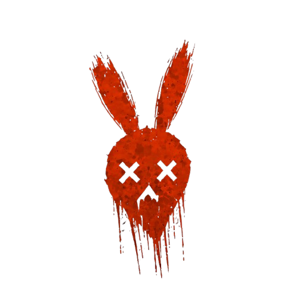

DEADLY CARROT
Welcome to my little rabbit shelter
↓
Scroll

Welcome to my little rabbit shelter
Здесь тебя ждут самые разные игры, совместные просмотры фильмов, внезапные песни, эмоциональные вопли и разговоры обо всём на свете.
Сейчас я учусь на саунд-дизайнера, поэтому на этом канале найдётся место не только играм, но и творчеству: иногда мы будем создавать музыку, ковыряться в звуках и обсуждать всё, что связано с аудио.
На моих стримах можно уютно посидеть после тяжёлого дня, поболтать, посмеяться, словить пару скримеров вместе со мной или просто послушать, как я снова начинаю петь без какой-либо причины.
Моя цель — собрать тёплое и дружное комьюнити, где каждый сможет почувствовать себя своим.
Так что бери чай, вкусняшки и устраивайся поудобнее. Рада каждому, кто решил заглянуть в моё маленькое морковное убежище 🖤
Оскорбления, токсичность и попытки испортить настроение здесь не приветствуются.
Я люблю болтать с чатом, так что не стесняйся участвовать в разговоре.
Если мне понадобится помощь — я обязательно скажу.
Без политики и религиозных споров. Хочется сохранить атмосферу уютной.
Не рекламируй себя или другие каналы без разрешения.
Если я внезапно начала петь — не пугайся. Это не баг, а особенность канала.
Остальное переживём.